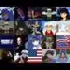

So it's over. Happy New Year, right? I've never done a year in review, but I didn't really know what I should do for my last Blog of Fall 2004. Officially, though, you should consider this the first Blog of Spring 2005, but for some reason, I am not wise to moving on so quickly. I needed another week.
January 5th. This day is of particular importance to me. On this day, two years ago, I thought things were going to be better. After working the entire break over nights at Target, this day represented my escape. I knew I was going back to Athens today, and things were going to be good again. I was so desperate to get back, for so many reasons, but there was one that was at the forefront of my mind.
This year was different.
"New Year's Project"
After I got a C in my American Modernism class, I was very discouraged. I didn't really like how I had been indulging a lifestyle of procrastination and "just getting by." I came back into the new year determined to prove that I was better than that. It was really rough, though. I was taking two English classes, because I had to stay on track.
I also decided to take a second stab at my creative writing. ENGL4800 (Advanced Creative Writing) turned out to be a really wonderful experience for me. I learned that I sucked. My writing sucked, and it wasn't inspired. On the other hand, I learned how to write again. I learned what inspiration was. I brought the emotions of my poetry so much closer to the reader than I ever had before while at the same time distancing myself from the piece. I haven't written since then, though I plan on picking up the pen very soon. Everything came together in 'My Will', a poem I wrote about the difficult choices we have to make, and how clear the right path is and how incapable we are to embrace it.
There was also some very troubling choices I had to make involving my father. Before I went back to school, I realized alot of things about him and that house. Ever since I was sent back to school my freshman year, and he had manipuled my need for book money to punish my mother, I had felt like a tool. I was a pawn, and money is what he used to push me around. I made the choice to refuse support from my father that moment I returned home, not because I wanted to get back at him. Because I couldn't do it two years earlier. I was in a position, this year, to separate myself from a man who was so skilled at making me feel worthless.
Everything ended up very well. I learned to accept failure with success. I'm not the best English major, that's for certain. I worked very hard in my Shakespeare class, and I am very happy that I got that C, because I earned it. I wrote an excellent paper, and I just bombed alot of tests. I don't consider that a failure, though my midterm paper in Modern Drama certainly was. I wasn't phased, though, I wrote an excellent paper and nailed the final, and recieved my first A an upper level English class (not to mention my second in ENGL4800). I realized I was a very smart person, when I put my mind to it.
Good Dizzy
Did I ever explain that? Well, in the summer of 2003, in the first few weeks I was dating Matt, I was drinking over at Nicole's house with her and a bunch of her brother's drunken high school friends. I told him I was dizzy (probably from all the Everclear), but I told him it was ok. It was ok, because it was "good dizzy." I was in love.
In 2004, I celebrated a whole year with Matt. We had some really sweet times together. I got to go with him all the way from Disney, to Key West, to South Beach, and I wouldn't have wanted to go with anyone else (except for Missy, but I had to have Matt with me, especially then). We got to go to this nice pizza place in the early morning while Missy was partying in South Beach. We got an awesome room in Orlando, which really turned out to be a steal, I guess because we arrived on a Tuesday.
It's hard to talk about this, honestly. I think alot of this belongs in a very different place. Let's just say, that the only reason I consider 2004 to be a very good year is because of Matt. There were alot of other things, of course, but he was a part of every good thing that happend to me this year.
Other good things include getting my car. I can't describe to you how much this means to me. I mean, the sheer love that that car represents is so much more than a shiny silver finish and tinted windows. My mother gave that to me. My mother did something really wonderful for me, she recognized the hard work and sacrifices I was making, and she gave me a reason to hold my chin up. It's the one thing I cherish so uniquely—not because it's my new car, but because it is from my mother. And I consider that to be the most valuable.
Tropical Depression
Things got really bad this fall. I thought I could have given a good sum-up here, but I can't. I'm still dealing with a whole lot of issues because of the lapse between what I expected to happen and what actually did.
I can say that I realized alot about myself and the friends I have. You don't really know who's going to be there for you when you're so hurt, that you can't stand talking about it without breaking into tears. Maybe it was a shock to some people—most of all me—but I do have a heart. I have a very real heart, and it's something that I am very thankful is still alive. I mean, you can't feel pain if you're not alive, right? So all of that has to be worth something.
Well, that sucked. I'm sorry, but I guess I really wasn't in the Blog mindset this semester. The next Blog will be better though, it's a revolution of Blog. It brings Blog to a whole new level: the last one.
It was fun, wasn't it? I think, in about ten years, someone's going to read this, and they're going to wonder what happened to that gay boy who moved to Georgia when he was in the 7th Grade. I think they'll wonder what came of this hell that we sometimes call UGA, and whether he's still the same person he spread across the table here for everyone to see. Well, I don't know about that. I just like to think that the best is always yet to come.
Maybe we need to get our hearts ripped out sometimes to realize it. I mean, what's life if not a loss of faith? We think we have it all figured out, and then someone's got to change something...